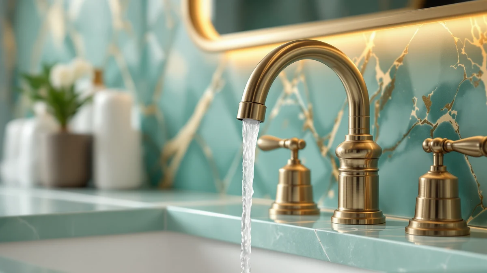

How to Clean Bathroom Faucets with Baking Soda: Complete Guide (2026)
Prices and picks verified as of September 2026. Independent, reader-supported reviews.


Things to Know Before You Buy
- Baking soda is mildly abrasive. It lifts soap scum and mineral spots without the harsh chemicals in commercial faucet cleaners, but it can dull soft or coated finishes if you scrub too hard.
- Not every finish tolerates it the same way. Chrome, stainless steel, and brushed nickel handle a baking soda paste well, while matte black, oil-rubbed bronze, and gold-plated faucets need a lighter touch and a shorter contact time.
- Fresh paste works best. Baking soda mixed with water starts to dry out within 10 to 15 minutes, so mix a small batch and use it while it is still spreadable.
- Rinsing matters as much as scrubbing. Leftover baking soda dries into a white, chalky film that looks worse than the stain you started with, so flush the faucet with clean water until no grit remains.
Learning how to clean bathroom faucets with baking soda gives you a cheap, non-toxic way to strip away hard water spots, soap scum, and dull mineral film without reaching for bleach or a commercial descaler. The mild abrasion in baking soda breaks down buildup that a damp cloth alone cannot touch, and it rinses away clean instead of leaving fumes behind.
The full process takes about 25 minutes and uses supplies you likely already have under the sink. You will mix a paste, apply it to the stained areas, let it work, scrub gently, then rinse and dry the faucet so no residue is left to dry into a new film. Follow the five steps below in order, and check the finish notes above if your faucet is matte black, oil-rubbed bronze, or gold-plated.
What You'll Need
- Supplies: baking soda, warm water, and a microfiber cloth
- Tools: a soft-bristle brush or old toothbrush and a small mixing bowl
Step 1: Clear the Sink and Rinse the Faucet
Move soap dispensers, cups, and anything else off the counter so you can reach every side of the faucet, including the back of the spout and the seam where the base meets the sink deck. Turn on the tap and rinse the entire fixture with warm water for 15 to 20 seconds to loosen surface dust and soap film before you introduce the baking soda.
This step also gives you a clear look at what you are dealing with. Light water spots wipe off in the next stage, while thicker, chalky buildup around the aerator or base tells you to spend extra dwell time there once you apply the paste. Skipping the rinse means you are scrubbing loose grime into the baking soda paste instead of removing it.
Step 2: Mix a Baking Soda Paste
In a small bowl, combine three tablespoons of baking soda with enough water, added a teaspoon at a time, to form a paste roughly the texture of toothpaste. Too much water turns it into a runny slurry that slides off vertical surfaces like the faucet neck, and too little leaves it too dry to spread evenly.
Mix only as much as you plan to use in the next few minutes. Baking soda paste starts to dry out and crumble within 10 to 15 minutes once it is exposed to air, so batching a large amount ahead of time wastes it. If you run out mid-job, mixing a second small batch takes under a minute.
Step 3: Apply the Paste to Stains and Mineral Buildup
Using your fingers or a soft cloth, spread a thin, even layer of paste over every spot with visible buildup: the base plate, the handle stems, the underside of the spout, and the tip of the aerator, where hard water rings tend to form first. Work the paste into any grooves or decorative ridges, since those catch grime that a flat wipe misses.
Let the paste sit for three to five minutes so the baking soda has time to soften the mineral deposits and soap film. On a faucet with heavy, crusted buildup, you can extend this to 10 minutes on chrome or stainless steel, but keep the dwell time under five minutes on matte black, oil-rubbed bronze, or gold finishes to avoid dulling the coating.
Step 4: Scrub Gently With a Soft Brush
Once the paste has had time to sit, go over each area with a soft-bristle brush or an old toothbrush, using small circular motions. The bristles reach into the aerator threads and the seams around the handle base that a cloth cannot get into, and the mild grit in the baking soda does the actual lifting, so you do not need to press hard.
Check your progress every 10 to 15 seconds of scrubbing on any finish other than chrome or stainless steel. If you see the color of your cloth or brush picking up a metallic tint, stop right away. That is a sign the abrasion is starting to wear through a coated or plated finish instead of lifting surface grime alone.
Step 5: Rinse Thoroughly and Buff Dry
Run warm water over the entire faucet for at least 30 seconds, paying extra attention to grooves and the base seam where paste tends to collect. Baking soda that dries in place turns into a fine white powder that is more visible than the original stain, so rinse until the water runs clear and you cannot feel any grit along the surface.
Finish by drying the faucet completely with a clean microfiber cloth, buffing in the direction of the finish rather than in circles. This last step matters more than it seems: water left to air-dry evaporates and leaves new mineral spots behind, so a faucet you spent 25 minutes cleaning with baking soda can look spotted again within a day if you skip the towel.
Common Mistakes to Avoid
The most common mistake when cleaning bathroom faucets with baking soda is leaving the paste on too long. Baking soda is a mild abrasive, and extended contact on matte black, oil-rubbed bronze, or gold-plated finishes wears through the coating and exposes the metal underneath, a change that no amount of rinsing reverses. Cap the dwell time at five minutes on any finish other than chrome or stainless steel.
Scrubbing too hard is the second issue. Baking soda already does the lifting, so pressing a brush into the faucet speeds up wear on the finish without cleaning any faster. Let the paste sit and use light, circular motions instead.
Skipping a hidden-spot test causes the most regret. Before treating the whole faucet, dab a small amount of paste on an inconspicuous area, like the underside of the spout, and check it after a minute. If the finish looks dull or the color shifts, switch to a gentler method such as a vinegar-and-water wipe instead of baking soda.
An incomplete rinse leaves a chalky white residue in the grooves and around the base, which looks like a fresh stain rather than a clean faucet. Flush the fixture with running water until no grit remains, then dry it by hand. Air-drying invites the same water spots you worked to remove.
Our Top Picks
If baking soda lifts the stains but the faucet still looks pitted, corroded, or permanently dulled underneath, no amount of cleaning brings back a finish that has already broken down. These three picks resist water spots and wipe clean fast, so cleaning bathroom faucets with baking soda becomes an occasional touch-up rather than a weekly fight.

Editor's Pick
gotonovo Shower Faucet Set with
The stainless steel finish resists water spots between cleanings, so a quick baking soda wipe is usually all it needs.
$69.99
Check Price on Amazon
Best Value
NOHALIPY Stainless Steel Brushed Nickel
Brushed nickel hides fingerprints and minor scuffing, and the finish holds up well to an occasional baking soda paste treatment.
$45.99
Check Price on Amazon
Premium Choice
IUERASD Brushed Gold Bathroom Faucet
The gold finish looks sharp when new, but stick to a soft cloth and mild soap here and save baking soda for the stainless picks above.
$55.99
Check Price on AmazonIs baking soda safe for all bathroom faucet finishes?
Baking soda is safe on chrome, stainless steel, and brushed nickel, which tolerate its mild abrasion well.
How long should you leave a baking soda paste on a faucet?
Three to five minutes is enough for most soap scum and light mineral spots.
Frequently Asked Questions
Is baking soda safe for all bathroom faucet finishes?
How long should you leave a baking soda paste on a faucet?
Does baking soda remove hard water stains from a bathroom faucet?
Can you use baking soda and vinegar together on a faucet?
How often should you clean a bathroom faucet with baking soda?
Verdict
Cleaning bathroom faucets with baking soda comes down to a simple rhythm: rinse, mix a fresh paste, apply it to the stains, scrub lightly, then rinse and dry until no residue remains. The whole job takes about 25 minutes and uses supplies you probably already have, which makes it an easy habit to repeat monthly rather than a special project you put off. The one rule worth remembering is dwell time. Chrome and stainless steel tolerate a longer soak, while matte black, oil-rubbed bronze, and gold finishes need a lighter touch and a quick rinse. If your faucet still looks pitted or corroded after a proper cleaning, no paste fixes a finish that has already failed, and that is the point to consider a replacement. The gotonovo shower faucet set from our picks above uses a stainless finish built to resist the water spots and mineral film that make repeat cleaning necessary in the first place.